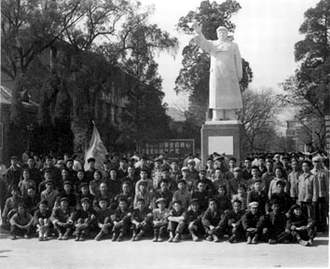

雕像
我每天上班都会经过人民广场。下班时，因为末班车的缘故，人民广场站已经无法通行，我只好绕路回家。
老板对考勤非常严格。若是上班打卡晚了几分钟，便要扣掉所有奖金。在这里干了几十年的工友常说，“扒皮“扣他的奖金不如切了他的命根子。我们都深以为然——事实上，如果“扒皮”肯让我们用命根子换奖金，我想我们所有人这辈子都不会再生二胎了。这是当然的事。每每想到孩子挨饿，或父母病卧的样子，我便打起寒战。
因此，我从来都是提前十五分钟到车站候车，也因此提前十五分钟就能到厂内。
在人民广场站等待的十五分钟，我就会看到那个怪人。
就拿昨天来说吧。早上六点，天还刚蒙蒙亮，他便已经站在了花岗岩台上，背对着阳光，右手高举指向前方，左手背在身后，面向黑暗，仿佛在发出恶毒的诅咒——至少我如此想象。天色太过昏暗，我从未看清他的表情，或是他究竟有没有在说些什么。日日如此，年年不变。
每天早上，当这座城市还尚未苏醒时，只有我们在人民广场站静静等候第一班车。在炎热的夏天，夜里的清凉还未褪去时，他在那里站着，右手高举，毫不畏惧四周飞舞的蚊虫；在寒冷的冬天，等我气喘吁吁地赶到车站时，他的肩上已经落满了白雪，但他的右手仍然伸出，拇指朝上，四指向前，似乎在指引着某种方向。
我常常沿着他的指尖看去。人民路仿佛由他的手指而生出一般，将面前的城市一分为二。然而我什么都看不到——除了冒着浓烟工厂，黑暗的商城，和脏乱的居民楼。我也曾问他：“那边到底有什么？” 而回应我的，只有他一如既往坚定的手指。
我想，我大概是在问自己。
十五分钟后，我便上了第一班车，随着打着哈欠的司机一起，把他留在公交车的浓烟中。在公交车转弯前，我转身看向车尾——还能依稀看到他依旧站在那里，右手高抬，指向远方，而脸上的表情仍然被黑暗笼罩，无法看清。
在晚上睡觉前，妻子铺床时，我曾和她谈起这个怪人。大概是什么精神有问题的人吧，妻子心不在焉地回答。
我知道事实并非如此。但刚想和替那人与妻子辩解一番，却发现她已经进入了梦乡。
在厂内，我时常在流水线上心不在焉。我拧着一个个螺丝，似乎螺丝也在拧我——被自己紧握的扳手拧得如同陀螺一般，我于是渐渐陷入脚下的地面，正如流水线上的螺丝陷入木板。每每此时，我又想起那人，与他那手指远方的坚定模样。我在流水线上左右张望，黑色的传送带上懒洋洋地散落着白色零件，正如人民路上稀稀拉拉的车辆，而两旁矗立的工友则宛如路旁一个个巨大的楼房——居民楼也好，商场也罢——对每个零件各自进行些微加工，然后便将他们吐出，赶忙处理下一个零件。在遥不可及，我几乎看不到的流水线结束处，我似乎看到了那人伸出了右手，脸上是慈祥的微笑。
扒皮气急败坏的咒骂与他高声大喊扣奖金的威胁打断了我的幻想，逼迫我继续拧着螺丝，逐渐陷入地板。我瞥了一眼扒皮，他矮小的身子刚好被墙角的阴影遮蔽，只有他那双溜圆、土黄的眼珠，以及恶毒的威胁能证明他的存在。听着扒皮越来越尖细的声音，我脑海中忽然冒出那人面对黑暗大约也正发出的咒骂，以及他坚定的指向。
他真的存在吗？我手中拧着螺丝，却不禁想到。他真的曾存在过吗？说到底，除了每天早上的沉默外，我没有任何可以证明他曾存在的证据——这个世界，似乎他存在与否都是一样的。他手指的方向，腐烂的甜腻味仍在蔓延，完全没有因为他的威严而消散。
他真的存在吗？我再次自问。
我不知为何，又不自主地想起上个月有个工友要上吊自杀时的事。当时他的脖子已经套进了绳索，奈何几个人架着他，于是他挣扎着，像条出水的鱼，双腿乱蹬着，但无论如何踹不掉凳子。在场的所有人似乎都在劝他，自己也说了些什么，然而最令人惊讶的是扒皮居然也破天荒地好言相劝：“小刘啊，活一辈子，没人记得你——开心呢，就是最重要的。能平安，还能保住家人平安，就最好了，别想那些有的没的……“
真够厚脸皮，我想，当初他想自杀还不是扒皮不肯预付工资。
然而思绪不听控制，又飘回了怪人身上。那人的家人呢？他的父母，他的妻儿，大概也在等着他回家吧——然而他就站在那里，没有一丝动作，更没有动摇的意思，坚定地指向看不见的远方，正在腐烂的远方……
想到这里，我心中忽然升起一股怒火——他怎么敢？对家庭的责任，对国家的责任，他居然全都忘记了吗？仅仅是站在那里能为谁做出什么贡献？他的妻子，他的孩子，他的父母该怎么办？这种人简直是社会的蛀虫，家庭的耻辱，他就该被万箭穿心，千刀万剐，剥皮抽筋，然后被钉在历史的耻辱柱上一万万年。
内心不停地咒骂着，手上的动作越来越快，我却感觉到莫名的不自在。
他不可能曾存在过。他更不可能存在。我如此安慰着自己，似乎内心的怒火平息了一些。一定是我自己的幻觉，是压力过大导致的，就像妻子曾说过的那样。我如此安慰着自己，又把精力转移到眼前的零件上。
但心里总是不舒服，似乎哪里打了死结，无法解开一样。我实在无法集中注意力。尽管多次对自己说那人不过是自己的一个幻觉，他的身形却还总是在脑海中显现，让我烦躁不已，抓耳挠腮。我心情过于烦躁，以至于一连三个零件都拧反了螺丝，在流水线下游的工友随即怨声载道。听着他们的抱怨，我的理智逐渐被消磨殆尽，脑子里剩下的尽是冲动——而冲动使我做出了一个妻子到目前都没原谅的决定。
趁着扒皮巡逻到车间的另一边，我猛地起身，掷下扳手，钢铁碰撞的声音在安静的车间内格外响亮，把我自己都吓了一跳。扒皮循着声音看过来，刚好看到站立的我，他的嘴刚刚张开想要用扣工资要挟，我却快他一步，推开车间大门就冲了出去。说实话，到今天我仍不知道当天我是怎么想的，也因此，从此以后，每每妻子在晚饭桌上数落我，或是父母埋怨我，或是孩子瞪着满是责备的大眼睛看我时，我只好羞愧地低头，而完全无言以对。自然，未经消电处理开门，工厂里的所有成品就此被我全部污染，我的家庭也在那一瞬间因为我而背上了巨额债务。雪上加霜的是，扒皮自然把我开除了，换了一个他早就想用的年轻力壮的小伙子。
但当时的我完全没有思考这件事。当时的我根本完全没有思考。我的脑子里满是一件事——我要去看看他到底是否真的存在。
被这股执念驱使着，我一路从工厂跑到了人民广场，日落在我身后照亮了广场上的一切，而矗立在广场入口处，脸庞因日落而微微发红的，是那个高举着手的怪人。
我顾不上喘息，跑到了他面前。他站在花岗岩台上，巨大的臂膀仿佛囊括了世间的一切。在他面前，我感觉自己像个第一次见到大象的蚂蚁。他的身高被无限放大，遮挡了视线中的其他一切。
“真的，是真的……”我听到自己喃喃地说，声音近乎癫狂。
我的大脑叫嚣着各种杂音，随之而来的是无尽的畏惧。我趔趄着后退，想从面前这人的视线中消失，从他那可怖的身影中逃离，从自己对一切的责任中解脱——然而还没后退两步，我便被一小块石头掀翻在地，而我的视线正好对上了他那仍然指向远方的右手。
我沿着他的指尖看去，这次我真的看到了——人民路尽头的夕阳流了无数的血，点燃了整片天空，将黑暗的商场，居民楼，和工厂都染成了红色。依稀中，我仿佛看到了黑色的流水线，载着一个个白色的零件，朝自己席卷而来。
我缓缓回头，映入我目光的是怪人的脸——他用花岗岩雕刻出的脸上的唯一表情，是理所当然般的坚毅微笑。
-2025.1.10, Northern Suzhou Station, Jiangsu, China, Tony Su
Art Credit: 侯艺兵
Click Me For Document Download as .docx File